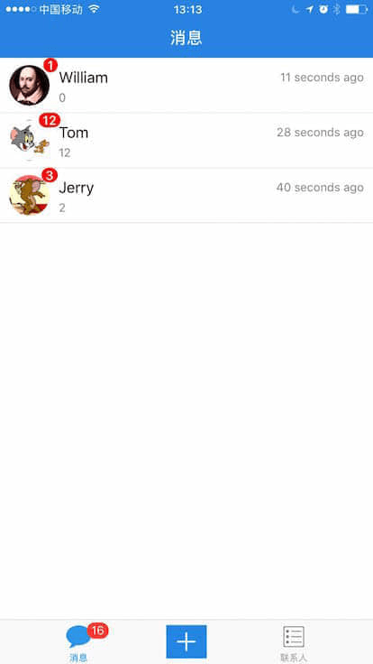
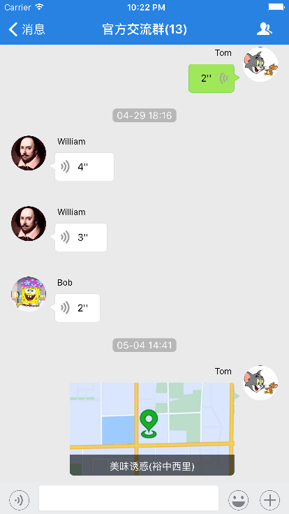
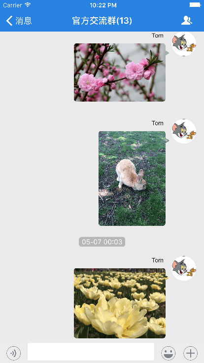
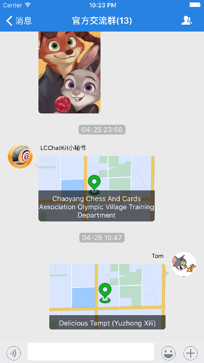
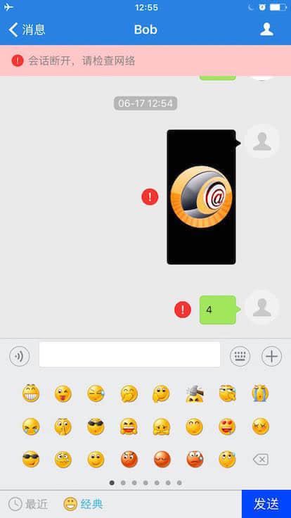
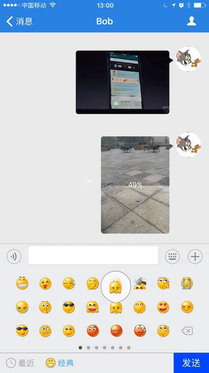
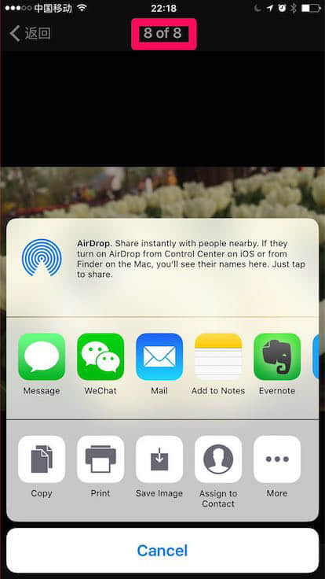
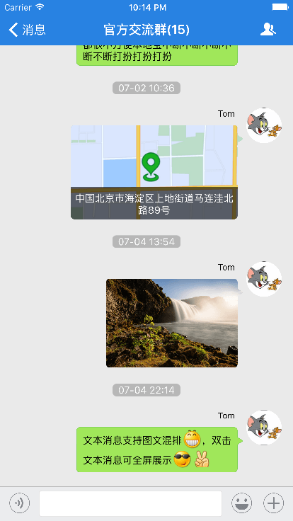

如果需要了解 Android 版本请点击: ChatKit 使用指南 · Android
ChatKit 是一个免费且开源的 UI 聊天组件，由 LeanCloud 官方推出，底层聊天服务基于 LeanCloud 的 IM 实时通信服务 LeanMessage 而开发，支持 iOS 7+。它的最大特点是把聊天常用的一些功能配合 UI 一起提供给开发者，帮助开发者快速集成 IM 服务，轻松实现聊天功能。同时它提供完全自由的授权协议，支持二次开发。
git clone --depth=1 https://github.com/leancloud/ChatKit-OC
从大量的使用场景来看，「最近联系人列表」和「聊天界面」这两个页面是开发者最常使用的，同时也是比较难处理的。
最近联系人页面实现的难点在于：
而聊天页面的实现难点则在于：
我们在 ChatKit 中重点完成了这两个页面的开发，大家可以看看效果：
最近联系人
语音消息，根据语音长度调整宽度
图片消息，尺寸自适应
地理位置消息
失败消息本地缓存，可重发
上传图片，进度条提示
图片消息支持多图联播，支持多种分享
文本消息支持图文混排
文本消息支持双击全屏展示
├── ChatKit ＃核心库文件夹 │ ├── LCChatKit.h # 这是整个库的入口，也是中枢，相当于”组件化方案“中的 Mediator。 │ ├── LCChatKit.m │ └── Class │ ├── Model │ ├── Module │ │ ├── Base │ │ ├── Conversation │ │ │ ├── Controller │ │ │ ├── Model │ │ │ ├── Tool │ │ │ └── View │ │ └── ConversationList │ │ ├── Controller │ │ ├── Model │ │ └── View │ ├── Resources # 资源文件，如图片、音频等 │ ├── Tool │ │ ├── Service │ │ └── Vendor │ └── View └── ChatKit-OC # Demo演示 ├── ChatKit-OC.xcodeproj └── Example └── LCChatKitExample.h #这是Demo演示的入口类，这个类中提供了很多胶水函数，可完成初步的集成 └── LCChatKitExample.m ├── Model ├── Module │ ├── ContactList │ │ ├── Controller │ │ ├── Tool │ │ └── View │ ├── Login │ │ ├── Controller │ │ ├── Model │ │ └── View │ ├── Main │ │ ├── Controller │ │ └── View │ └── Other
从上面可以看出，ChatKit-OC 项目包分为两个部分：
ChatKit-OC
ChatKit
LCChatKitExample
为了让这个库更易入手，避免引入过多公开的类和概念，我们采用了类似「组件化」的方式进行构建，即将你在使用 ChatKit 库时所需要用到的所有方法都放在了 LCChatKit 这一个类中。它是一个 Mediator，是整个库的入口，也是中枢。
LCChatKit
使用 ChatKit 大体有几个步骤：
-[AppDelegate application:didFinishLaunchingWithOptions:]
-[LCChatKit setAppId:appKey:]
-[LCChatKit sharedInstance]
-[[LCChatKit sharedInstance] openWithClientId:callback:]
-[[LCChatKit sharedInstance] closeWithCallback:]
-[[LCChatKit sharedInstance] setFetchProfilesBlock:]
LCCKUserSystemService.h
AVUser
-[[LCChatKit sharedInstance] setGenerateSignatureBlock:]
open
start
kick
invite
下面按步骤进行详细的介绍。
在文件 Podfile 中加入以下内容：
Podfile
pod 'ChatKit'
然后使用 CocoaPods 进行安装。如果尚未安装 CocoaPods，运行以下命令进行安装：
gem install cocoapods
安装成功后就可以安装依赖了。建议使用如下方式：
# 禁止升级 CocoaPods 的 spec 仓库，否则会卡在 Analyzing dependencies，非常慢 pod update --verbose --no-repo-update
如果提示找不到库，则可去掉 --no-repo-update。
--no-repo-update
如果不想使用 CocoaPods 进行集成，也可以选择使用 源码集成。
打开 AppDelegate 文件，添加下列导入语句到头部：
AppDelegate
#import <ChatKit/LCChatKit.h>
然后粘贴下列代码到 application:didFinishLaunchingWithOptions 函数内：
application:didFinishLaunchingWithOptions
// 开启 LeanCloud 服务 [LCChatKit setAppId:@"{{appid}}" appKey:@"{{appkey}}"];
AppId 和 appKey 可以在 控制台 > 应用设置 中找到。
ChatKit 提供了一个快速集成的演示类 LCChatKitExample，路径如下：
├── ChatKit ＃核心库文件夹 └── ChatKit-OC # Demo演示 ├── ChatKit-OC.xcodeproj └── Example └── LCChatKitExample.h # 这是 Demo 演示的入口类，这个类中提供了很多胶水函数，可完成初步的集成。 └── LCChatKitExample.m
使用 LCChatKitExample 提供的函数即可完成从程序启动到登录再到登出的完整流程。
-[AppDelegate didFinishLaunchingWithOptions:]
#warning
/*! * 入口胶水函数：初始化入口函数 * * 程序完成启动，在 appdelegate 中的 `-[AppDelegate didFinishLaunchingWithOptions:]` 一开始的地方调用. */ + (void)invokeThisMethodInDidFinishLaunching; /*! * Invoke this method in `-[AppDelegate appDelegate:didRegisterForRemoteNotificationsWithDeviceToken:]`. */ + (void)invokeThisMethodInDidRegisterForRemoteNotificationsWithDeviceToken:(NSData *)deviceToken; /*! * invoke This Method In `-[AppDelegate application:didReceiveRemoteNotification:]` */ + (void)invokeThisMethodInApplication:(UIApplication *)application didReceiveRemoteNotification:(NSDictionary *)userInfo ; /*! * 入口胶水函数：登入入口函数 * * 用户即将退出登录时调用 */ + (void)invokeThisMethodAfterLoginSuccessWithClientId:(NSString *)clientId success:(LCCKVoidBlock)success failed:(LCCKErrorBlock)failed; /*! * 入口胶水函数：登出入口函数 * * 用户即将退出登录时调用 */ + (void)invokeThisMethodBeforeLogoutSuccess:(LCCKVoidBlock)success failed:(LCCKErrorBlock)failed; + (void)invokeThisMethodInApplicationWillResignActive:(UIApplication *)application; + (void)invokeThisMethodInApplicationWillTerminate:(UIApplication *)application;
主流的社交聊天软件，例如微信和 QQ 都会把最近联系人界面作为登录后的首页，可见其重要性。因此我们在 ChatKit 也提供了对话列表 LCIMConversationListController 页面，初始化方法非常简单：
LCIMConversationListController
LCCKConversationListViewController *firstViewController = [[LCCKConversationListViewController alloc] init];
因为最近联系人的所有信息都由 ChatKit 内部维护，不需要传入额外数据，所以直接展示这个 ViewController 即可。最近联系人界面的数据，依赖于本地数据库。这些数据会在聊天过程中自动进行更新，你无需进行繁琐的数据库操作。
按照上面的步骤，我们可以非常方便地打开最近联系人页面。但是我们会发现，点击其中的某个联系人／聊天群组，我们并不能直接进入聊天界面。要做到这一点，我们需要给 LCChatKit 设置上事件响应函数，示例代码如下：
[[LCChatKit sharedInstance] setDidSelectConversationsListCellBlock:^(NSIndexPath *indexPath, AVIMConversation *conversation, LCCKConversationListViewController *controller) { NSLog(@"conversation selected"); LCCKConversationViewController *conversationVC = [[LCCKConversationViewController alloc] initWithConversationId:conversation.conversationId]; [controller.navigationController pushViewController:conversationVC animated:YES]; }];
对于联系人列表页面，我们在 LCChatKit 可以响应如下四种操作：
/*! * 选中某个对话后的回调 (比较常见的需求) * @param conversation 被选中的对话 */ typedef void(^LCCKConversationsListDidSelectItemBlock)(NSIndexPath *indexPath, AVIMConversation *conversation, LCCKConversationListViewController *controller); /*! * 设置选中某个对话后的回调 */ - (void)setDidSelectConversationsListCellBlock:(LCCKConversationsListDidSelectItemBlock)didSelectItemBlock; /*! * 删除某个对话后的回调 (一般不需要做处理) * @param conversation 被选中的对话 */ typedef void(^LCCKConversationsListDidDeleteItemBlock)(NSIndexPath *indexPath, AVIMConversation *conversation, LCCKConversationListViewController *controller); /*! * 设置删除某个对话后的回调 */ - (void)setDidDeleteConversationsListCellBlock:(LCCKConversationsListDidDeleteItemBlock)didDeleteItemBlock; /*! * 对话左滑菜单设置block (最近联系人页面有复杂的手势操作时，可以通过这里扩展实现) * @return 需要显示的菜单数组 * @param conversation, 对话 * @param editActions, 默认的菜单数组，成员为 UITableViewRowAction 类型 */ typedef NSArray *(^LCCKConversationEditActionsBlock)(NSIndexPath *indexPath, NSArray<UITableViewRowAction *> *editActions, AVIMConversation *conversation, LCCKConversationListViewController *controller); /*! * 可以通过这个block设置对话列表中每个对话的左滑菜单，这个是同步调用的，需要尽快返回，否则会卡住UI */ - (void)setConversationEditActionBlock:(LCCKConversationEditActionsBlock)conversationEditActionBlock;
AVIMConversation
聊天界面有两种初始化方式：
// 用于单聊，默认会创建一个只包含两个成员的 unique 对话(如果已经存在则直接进入，不会重复创建) LCCKConversationViewController *conversationViewController = [[LCCKConversationViewController alloc] initWithPeerId:peerId];
// 单聊或群聊，用于已经获取到一个对话基本信息的场合。 LCCKConversationViewController *conversationViewController = [[LCCKConversationViewController alloc] initWithConversationId:conversationId];
这里注意，通过 peerId 初始化，内部实现时，如果没有一个 unique 对话刚好包含这两个成员，则会先创建一个 unique 对话，所以调用该方法时可能会导致 _Conversation 表中自动增加一条记录。同理，通过 conversationId 初始化群聊，内部实现时，如果不是对话成员会先把当前用户加入对话，并开启群聊。
peerId
conversationId
由于有了 ChatKit 的帮助，聊天界面的初始化和展示非常简单，但是这里面交互上还有很多地方需要自定义扩展。
如果通过 peerId 打开对话，或者通过 conversationId 打开对话时，网络出现问题或 传入参数有误，那么对话根本无法进行，这时候我们可以通过给 LCCKConversationViewController 设定 conversationHandler 进行处理。示例代码如下：
[conversationVC setConversationHandler:^(AVIMConversation *conversation, LCCKConversationViewController *conversationController) { if (!conversation) { // 显示错误提示信息 [conversationController alert:@"failed to create/load conversation."]; } else { // 正常处理 } }];
在 QQ／微信之类的聊天应用中，聊天界面右上角会提供一个显示对话详细信息的按钮，点击可以打开对话详情页面，在那里可以进行改名、拉人、踢人、静音等操作。LCCKConversationViewController 中通过调用以下 API 也支持这一功能：
typedef void(^LCCKBarButtonItemActionBlock)(void); typedef NS_ENUM(NSInteger, LCCKBarButtonItemStyle) { LCCKBarButtonItemStyleSetting = 0, LCCKBarButtonItemStyleMore, LCCKBarButtonItemStyleAdd, LCCKBarButtonItemStyleAddFriends, LCCKBarButtonItemStyleShare, LCCKBarButtonItemStyleSingleProfile, LCCKBarButtonItemStyleGroupProfile, }; - (void)configureBarButtonItemStyle:(LCCKBarButtonItemStyle)style action:(LCCKBarButtonItemActionBlock)action;
示例代码如下：
[conversationController configureBarButtonItemStyle:LCCKBarButtonItemStyleGroupProfile action:^{ ConversationDetailViewController *detailVC = [[ConversationDetailViewController alloc] init];// 自己实现的对话详情页 detailVC.conversation = conversation; [conversationController.navigationController pushViewController:detailVC animated:YES]; }];
如果你不想使用 CocoaPods 进行集成，也可以选择使用源码集成。步骤如下：
第一步：
将 项目结构 中提到的 ChatKit 这个「核心库文件夹」拖拽到项目中。
第二步：
添加 ChatKit 依赖的第三方库以及对应版本：
ChatKit 组件收费么？ ChatKit 是完全开源并且免费给开发者使用，使用聊天所产生的费用以账单为准。
接入 ChatKit 有什么好处？ 它可以减轻应用或者新功能研发初期的调研成本，直接引入使用即可。ChatKit 从底层到 UI 提供了一整套的聊天解决方案。
ChatKit 使用指南 · iOS
ChatKit 是一个免费且开源的 UI 聊天组件，由 LeanCloud 官方推出，底层聊天服务基于 LeanCloud 的 IM 实时通信服务 LeanMessage 而开发，支持 iOS 7+。它的最大特点是把聊天常用的一些功能配合 UI 一起提供给开发者，帮助开发者快速集成 IM 服务，轻松实现聊天功能。同时它提供完全自由的授权协议，支持二次开发。
获取项目
集成效果
从大量的使用场景来看，「最近联系人列表」和「聊天界面」这两个页面是开发者最常使用的，同时也是比较难处理的。
最近联系人页面实现的难点在于：
而聊天页面的实现难点则在于：
我们在 ChatKit 中重点完成了这两个页面的开发，大家可以看看效果：
最近联系人
语音消息，根据语音长度调整宽度
图片消息，尺寸自适应
地理位置消息
失败消息本地缓存，可重发
上传图片，进度条提示
图片消息支持多图联播，支持多种分享
文本消息支持图文混排
文本消息支持双击全屏展示
项目结构
从上面可以看出，
ChatKit-OC项目包分为两个部分：ChatKit是库的核心库文件夹。ChatKit-OC为 Demo 演示部分，其中LCChatKitExample这个类提供了很多胶水函数，可完成初步的集成。使用方法
为了让这个库更易入手，避免引入过多公开的类和概念，我们采用了类似「组件化」的方式进行构建，即将你在使用 ChatKit 库时所需要用到的所有方法都放在了
LCChatKit这一个类中。它是一个 Mediator，是整个库的入口，也是中枢。使用 ChatKit 大体有几个步骤：
-[AppDelegate application:didFinishLaunchingWithOptions:]中调用-[LCChatKit setAppId:appKey:]来开启 LeanCloud 服务。-[LCChatKit sharedInstance]来初始化一个单例对象。-[[LCChatKit sharedInstance] openWithClientId:callback:]开启 LeanCloud 的 IM 服务 LeanMessage，开始聊天。-[[LCChatKit sharedInstance] closeWithCallback:]关闭 LeanCloud 的 IM 服务，结束聊天。-[[LCChatKit sharedInstance] setFetchProfilesBlock:]，设置用户体系，里面要实现如何根据 userId 获取到一个 User 对象的逻辑。ChatKit 会在需要用到 User 信息时调用你设置的这个逻辑。LCCKUserSystemService.h文件中给出了例子，演示了如何集成 LeanCloud 原生的用户系统AVUser。-[[LCChatKit sharedInstance] setGenerateSignatureBlock:]方法，那么 ChatKit 会自动为以下行为添加签名：open（开启聊天）、start（创建对话）、kick（踢人）、invite（邀请）。反之不会。下面按步骤进行详细的介绍。
CocoaPods 导入
在文件
Podfile中加入以下内容：然后使用 CocoaPods 进行安装。如果尚未安装 CocoaPods，运行以下命令进行安装：
安装成功后就可以安装依赖了。建议使用如下方式：
如果提示找不到库，则可去掉
--no-repo-update。如果不想使用 CocoaPods 进行集成，也可以选择使用 源码集成。
初始化
打开
AppDelegate文件，添加下列导入语句到头部：然后粘贴下列代码到
application:didFinishLaunchingWithOptions函数内：AppId 和 appKey 可以在 控制台 > 应用设置 中找到。
胶水函数快速集成
ChatKit 提供了一个快速集成的演示类
LCChatKitExample，路径如下：使用
LCChatKitExample提供的函数即可完成从程序启动到登录再到登出的完整流程。-[AppDelegate didFinishLaunchingWithOptions:]等函数中调用下面这几个基础的入口胶水函数，可完成初步的集成。#warning，请仔细阅读这些 warning 的注释，根据实际情况调整代码，以符合你的需求。最近联系人界面
主流的社交聊天软件，例如微信和 QQ 都会把最近联系人界面作为登录后的首页，可见其重要性。因此我们在 ChatKit 也提供了对话列表
LCIMConversationListController页面，初始化方法非常简单：因为最近联系人的所有信息都由 ChatKit 内部维护，不需要传入额外数据，所以直接展示这个 ViewController 即可。最近联系人界面的数据，依赖于本地数据库。这些数据会在聊天过程中自动进行更新，你无需进行繁琐的数据库操作。
由最近联系人进入聊天界面
按照上面的步骤，我们可以非常方便地打开最近联系人页面。但是我们会发现，点击其中的某个联系人／聊天群组，我们并不能直接进入聊天界面。要做到这一点，我们需要给 LCChatKit 设置上事件响应函数，示例代码如下：
对于联系人列表页面，我们在 LCChatKit 可以响应如下四种操作：
聊天界面
AVIMConversation对象， LeanMessage 用它来管理对话成员，发送消息，不区分群聊、单聊。Demo 中采用了判断对话人数的方式来区分群聊、单聊。聊天界面有两种初始化方式：
这里注意，通过
peerId初始化，内部实现时，如果没有一个 unique 对话刚好包含这两个成员，则会先创建一个 unique 对话，所以调用该方法时可能会导致 _Conversation 表中自动增加一条记录。同理，通过conversationId初始化群聊，内部实现时，如果不是对话成员会先把当前用户加入对话，并开启群聊。响应聊天界面的几类操作
由于有了 ChatKit 的帮助，聊天界面的初始化和展示非常简单，但是这里面交互上还有很多地方需要自定义扩展。
如果通过 peerId 打开对话，或者通过 conversationId 打开对话时，网络出现问题或 传入参数有误，那么对话根本无法进行，这时候我们可以通过给 LCCKConversationViewController 设定 conversationHandler 进行处理。示例代码如下：
在 QQ／微信之类的聊天应用中，聊天界面右上角会提供一个显示对话详细信息的按钮，点击可以打开对话详情页面，在那里可以进行改名、拉人、踢人、静音等操作。LCCKConversationViewController 中通过调用以下 API 也支持这一功能：
示例代码如下：
手动集成
如果你不想使用 CocoaPods 进行集成，也可以选择使用源码集成。步骤如下：
第一步：
将 项目结构 中提到的 ChatKit 这个「核心库文件夹」拖拽到项目中。
第二步：
添加 ChatKit 依赖的第三方库以及对应版本：
常见问题
ChatKit 组件收费么？
ChatKit 是完全开源并且免费给开发者使用，使用聊天所产生的费用以账单为准。
接入 ChatKit 有什么好处？
它可以减轻应用或者新功能研发初期的调研成本，直接引入使用即可。ChatKit 从底层到 UI 提供了一整套的聊天解决方案。